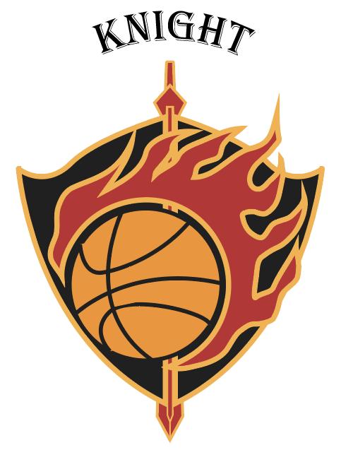
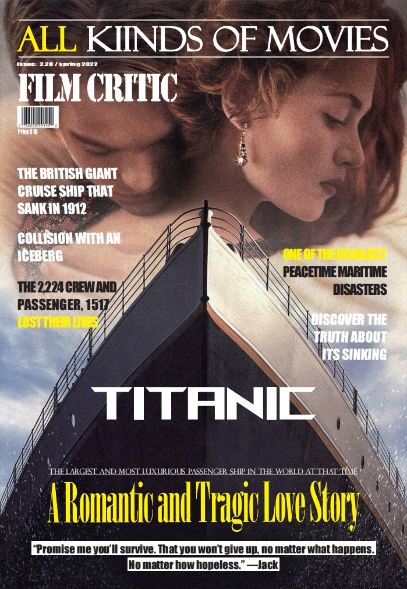
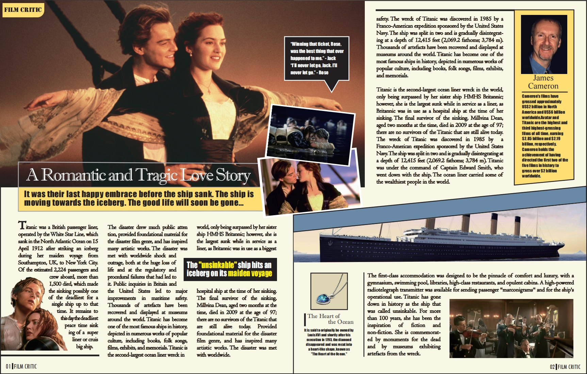
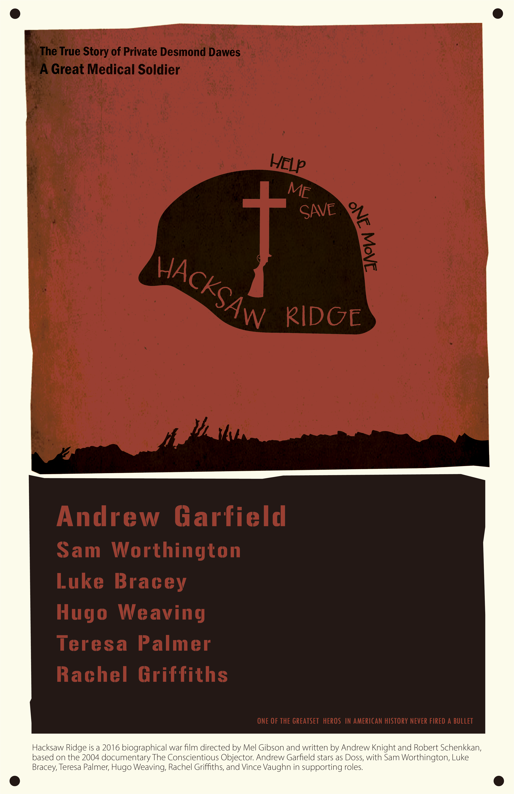

Projects Overview
Project Goal:
- Introduce and apply fundamental design principles for visual communication. Each project explores theory and practice from the course—covering historical, philosophical, perceptual, and semiotic approaches, while focusing on structure, composition, hierarchy, form, color, space, scale, typography, legibility, and readability.
My Role: Designer (concept development, design execution, and final presentation)
Built With:
- Adobe Illustrator
- Adobe Photoshop
Work Time: 4 Months (January 2022 - April 2022)
Showcase:
KNIGHT Logo

A bold basketball-themed emblem symbolizing passion, courage, and resilience
Titanic Magazine Cover

Dramatic composition highlighting the grand scale and cinematic allure of Titanic
Titanic Magazine Spread

A multi-column layout blending text, imagery, and design elements to narrate the film’s story
Hacksaw Ridge Poster

Saul Bass–inspired piece striking typography to convey wartime tension
Project Description
Design 1: KNIGHT Logo
A branding exercise to create a fictional company logo. Using Adobe Illustrator, the design merges a basketball, flame, sword, and shield—symbolizing passion, courage, and perseverance. By pairing bold shapes with a disciplined font choice, the logo aims to project both energy and a sense of camaraderie.
Design Process:

Brand Identity (KNIGHT Logo)
- Concept & Symbolism: Basketball as the core icon, combined with flame, sword, and shield to convey passion, courage, and resilience.
- Typography: Chosen to reflect the majesty of a warrior while remaining approachable.
- Color & Form: Strong contrasts ensure the logo stands out in both print and digital formats.
Design 2: Cover & Spread Layout
A cover and magazine spread developed to highlight core layout principles: composition, typography, alignment, and hierarchy. Created in both Illustrator and Photoshop, this piece draws inspiration from contemporary film magazines. It balances imagery, negative space, and textual elements, ensuring strong visual flow and readability.
Design Process:
Editorial Layout (Cover & Spread)
- Composition & Grid: Utilized a multi-column layout to organize text and visuals.
- Typography & Hierarchy: Strategic font pairing to highlight headlines, subheadings, and body text.
- Imagery & Balance: Careful placement of images to maintain negative space, improving legibility and visual appeal.
Design 3: Poster
A poster influenced by a renowned designer’s style (Saul Bass), focusing on simplified shapes, minimal color palettes, and bold typography. Created in Illustrator and Photoshop, it reinterprets the visual language of iconic mid-century film posters, emphasizing narrative clarity through striking imagery and carefully curated text placement.
Design Process:
Poster Design (Saul Bass–Inspired)
- Minimalist Shapes & Colors: Emphasis on simple geometric forms and an analogous color scheme to evoke emotional depth.
- Bold Typography: Handwritten-style or uneven kerning to replicate the Saul Bass aesthetic, adding narrative dynamism.
- Central Theme: A single dominant visual element (a helmet, in this case) combined with symbolic details (medical cross, barren land) for thematic impact.
Takeaways
Through these three projects, I explored diverse aspects of graphic design—from brand identity and editorial layouts to stylistic poster creation. Each piece put theoretical principles into practical context, reinforcing my understanding of composition, typography, and color usage. Working independently sharpened my ability to ideate, iterate, and refine, ultimately enhancing my adaptability across various design formats.
These projects also provided deeper insight into bridging historical and contemporary styles, helping me appreciate how fundamental design principles remain timeless even as tools and media evolve.